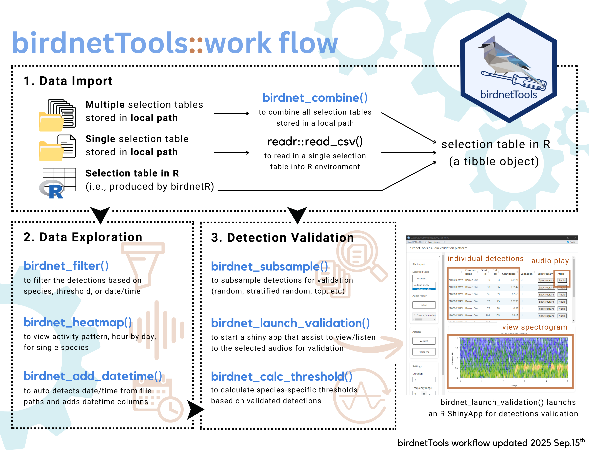
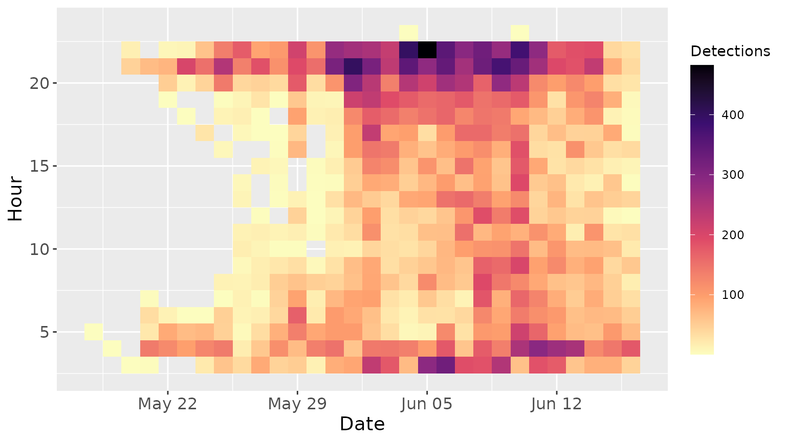
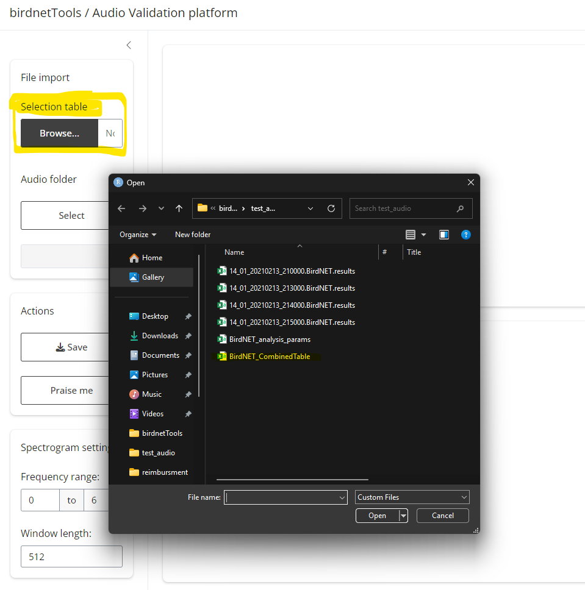
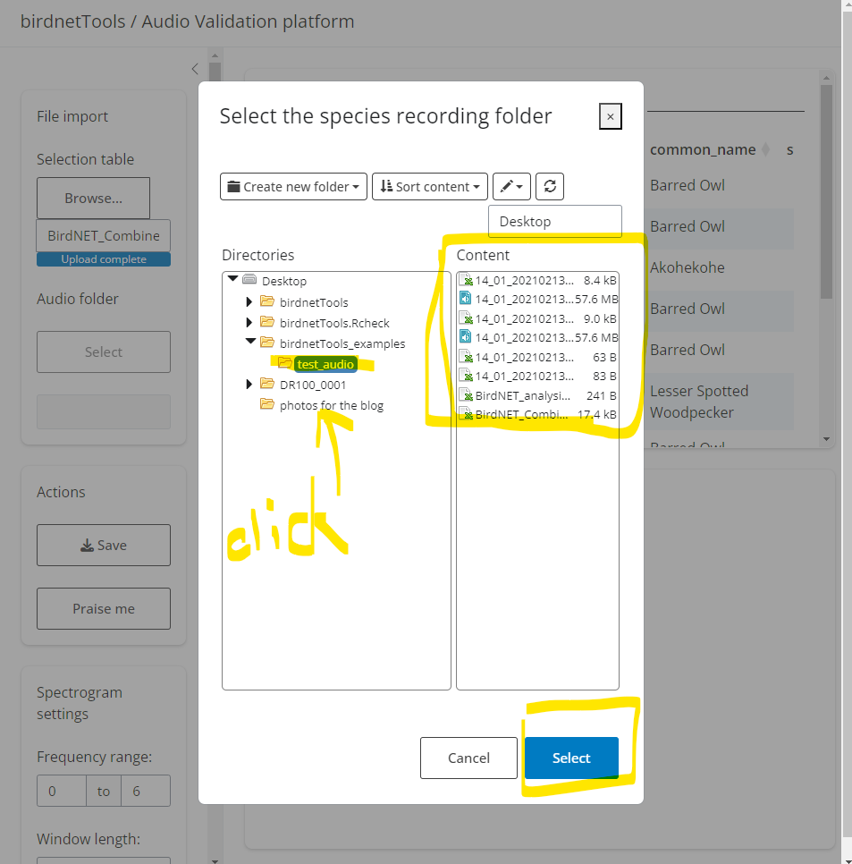
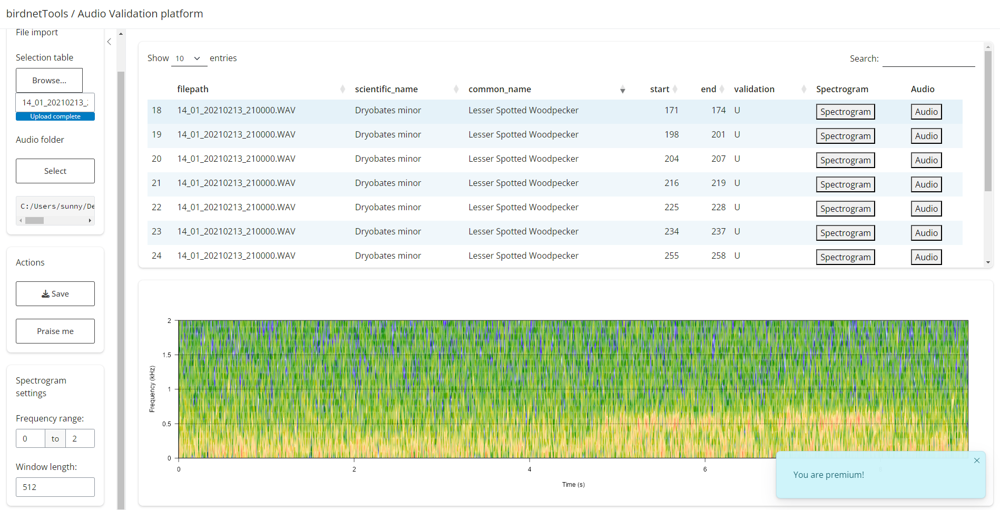

The birdnetTools is an R package designed to streamline
the post-processing and validation of output from BirdNET, an
open-source neural network developed by the Cornell Lab of
Ornithology and Chemnitz University of
Technology for detecting and identifying bird sounds. The goal of
birdnetTools is to help researchers manage, explore, and
validate BirdNET results. It includes functions for filtering detections
by species, confidence, and date/time; visualizing temporal patterns;
and validating detections with an interactive Shiny app to support
threshold-setting workflows.
The cheatsheet below can be downloaded from here:
{kind=link}

Data Import
BirdNET detections can be imported in various formats depending on
how your data was processed and saved. The birdnetTools
package supports three main workflows:
- Importing multiple detection results
After processing audio files through BirdNET, you may have several
.csv files—each corresponding to a separate recording. The
birdnet_combine() function allows you to import and merge
these files into R all at once. It reads all .csv files in
a specified directory, combines them into a single data frame, and adds
a filepath column if it’s not already present.
This is especially useful when you’ve processed large batches of audio recordings and want to work with them collectively in R.
# import multiple detection files
birdnet_combine(path = "PATH_TO_BIDNET_OUTPUT_FOLDER")- Importing combined detection results
If you already have a combined output file, for example, if you
checked the “combine output table” option in the BirdNET GUI, you can
read it directly into R using the readr package:
# Import a combined detection CSV
library(readr)
detections <- read_csv("PATH_TO_BIRDNET_OUTPUT_FILE.csv")- Using detection results already in R
Another possibility is that you analyzed the audio files using the birdnetR
package, which by default returns a data frame containing BirdNET
detections. In this case, you can use the data frame directly in your
analysis without needing to import it again. The functions in
birdnetTools are designed to work with data frames that
include the necessary columns: start, end,
common_name, confidence, and
filepath.
Exploring and Preparing Data
To demonstrate how the functions in birdnetTools work,
we will use the built-in dataset example_jprf_2023. This
dataset contains BirdNET detections recorded at the John Prince Research
Forest in British Columbia, Canada, over a continuous 24-hour period
during May–June 2023, from 5 ARU locations. The recordings were
processed using the BirdNET GUI (model v2.4) with a confidence threshold
of 0.1. The dataset contains 392,300 rows and 14 columns, including
information such as the file path, start and end times of detections,
species names, and confidence scores.
# load the dataset
data <- example_jprf_2023
# view the dataset documentation
?example_jprf_2023Filtering data with customized criteria
In most cases, researchers don’t work directly with the full set of
raw BirdNET detections. Instead, they may be interested in filtering for
specific specie(s), applying a confidence threshold, narrowing the
dataset by date, or selecting recordings from certain hours of the day.
The birdnet_filter() function makes it easy to apply these
filters in a single step:
# apply filter
data_filtered <- birdnet_filter(data,
species = "Swainson's Thrush",
threshold = 0.2,
year = 2023,
min_date = "2023-05-01",
max_date = "2023-06-30",
hour = c(0:23)
)
# view function documentation
?birdnet_filter()The birdnet_filter() function allows you to filter
BirdNET detections based on a variety of criteria, including species,
confidence threshold, year, date range, and hour of the day. The
species argument should be specified using common names,
either as a single character string or a vector of names. The
threshold argument accepts either a numeric value (for a
universal threshold) or a data frame containing common_name
and threshold columns (for species-specific thresholds);
detections with confidence scores below the specified threshold will be
excluded. The year and hour arguments can also
be given as single values or vectors.
After applying filters using birdnet_filter(), the
function automatically records the filtering criteria in the data’s
attributes. This makes it easy to keep track of how the dataset was
processed:
attr(data_filtered, "filter_log")
#> $species
#> [1] "Swainson's Thrush"
#>
#> $threshold
#> [1] 0.2
#>
#> $year
#> [1] 2023
#>
#> $min_date
#> [1] "2023-05-01"
#>
#> $max_date
#> [1] "2023-06-30"
#>
#> $hour
#> [1] 0 1 2 3 4 5 6 7 8 9 10 11 12 13 14 15 16 17 18 19 20 21 22 23Visualizing raw/filtered data
Visualization is the easiest way to quickly examine the data,
identify any obvious outliers, assess detection distributions, and
observe patterns. The birdnet_heatmap() function provides
this type of visualization and can be used with either raw or filtered
data. Below is an example of the activity pattern of Swainson’s Thrushe
across the breeding season (across 5 ARU sites).
birdnet_heatmap(data_filtered)
Note: If you visualize raw data (before filtering species and site), detections will be grouped across all species and locations — interpret with caution.
Add columns for date and time
Often, it is necessary to have datetime information associated with
the detections to know exactly when the detections were made (i.e., when
the bird was singing). The birdnet_add_datetime() adds this
datetime information to your data. This function requires the original
dataset to include datetime details within the file path column. It
scans the file path for datetime patterns and extracts the date (year,
month, day) and time (hour, minute).
# add datetime information to the filtered data
data_with_datetime <- birdnet_add_datetime(data_filtered)
# show which new columns were added
new_columns <- setdiff(colnames(data_with_datetime), colnames(data_filtered))
new_columns
#> [1] "datetime" "date" "year" "month" "mday" "yday" "hour"
#> [8] "minute"Validating Detections & Getting Thresholds
Each BirdNET detection includes a “confidence” score, but this score does not reflect true probability and varies in meaning across species. For example, BirdNET may detect one species reliably even at low confidence, while another may still yield false positives at high confidence. To improve reliability, it’s recommended to use species-specific thresholds. This section follows the methods outlined in Tseng et al. 2025, which require a validation process where a subset of detections is reviewed by human experts to classify them as true or false positives. For further context on interpreting confidence scores, see Wood and Kahl 2024.
1. Get a validation set by subsampling
To get the species-specific threshold, we will need to validate
detections in data_filtered, which contains Swainson’s
Thrush detections filtered at a 0.2 confidence threshold. First, we will
need to subsample a portion for manual review. The
birdnet_subsample() function supports four sampling
methods: propotional_stratified (propotional across
confidence scores), even_stratified (evenly across
confidence scores), random (selection based on confidence
score distribution), and top (highest confidence
detections). The even_stratified,
propotional_stratified, and random approaches
help create a representative validation set, while top
sampling targets the most confident predictions.
# subsample 300 detections from the filtered data
set.seed(123) # for reproducibility
data_subsampled <- birdnet_subsample(data_filtered,
n = 300)
# view function documentation
?birdnet_subsample()Optionally, you can save the subsampled detections as a
.csv file in your working directory by setting
save_to_file = TRUE and specifying a file name:
birdnet_subsample(
data_filtered,
n = 300,
save_to_file = TRUE, # whether to save the subsample to a file
file = "swainsons_thrush_validation.csv" # name of the file
)2. Validation using shinyApp
Manually validating detections, by locating audio files, finding
timestamps, and listening to clips, can be slow and tedious. The
birdnet_launch_validation() function streamlines this
process by launching a Shiny app that displays subsampled detections
alongside their spectrograms and corresponding audio clips. With an
interactive interface, users can quickly review each detection by
listening to audio or viewing spectrograms and edit the validation
datasheet, making the validation process much more efficient.
After running the code above, a Shiny interface will launch. This app requires two inputs:
Detection file (.csv) – A file containing the BirdNET predictions selected for validation.
Audio folder path – The directory where your corresponding audio clips are stored.
| Select meta data | Select recording folder |
|---|---|
|  |  |
Once loaded:
The top panel will display the table of detections. Clicking “Spectrogram” will show the corresponding visual signal below; clicking “Audio” will play the relevant clip.
To validate, double-click the
U(Unknown) cell in thevalidationcolumn. Enter1for a true positive or0for a false positive. Your input will update the original.csvfile.When finished, click “Save” to export your results. A new file will be created with
_validationappended to the original name. If you only complete part of the validation, this file can later be reloaded to resume the process.The “Settings” tab lets you tweak spectrogram display options. And if you’re getting tired, try the “Praise me” button for a quick boost of motivation. 🌟

3. Get threshold
Once a set of BirdNET detections has been validated (i.e., manually
labeled as true or false positives), you can calculate a
species-specific confidence threshold that meets a desired level of
precision. The birdnet_calc_threshold() function helps
identify the minimum confidence score required to achieve a target
precision for a given species.
# simulate validation as a Bernoulli trial
data_subsampled$validation <- rbinom(
n = nrow(data_subsampled),
size = 1,
prob = pmin(pmax(data_subsampled$confidence, 0), 1)
)It only takes one line of code to calculate species-specific
thresholds using the birdnet_calc_threshold() function.
This function requires a data frame containing the columns
common_name, confidence, and
validation (where validation is 1 for true
positives and 0 for false positives). It returns the
minimum confidence score needed to achieve the specified precision or
probability level. For more details on the difference between the
precision and probability arguments, please see the function
documentation (?birdnet_calc_threshold()).
birdnet_calc_threshold(data_subsampled,
precision = 0.9)
#> ℹ Processing species: Swainson's Thrush
#> ✔ Thresholds calculated to achieve 0.9 precision.
#> # A tibble: 1 × 2
#> common_name threshold
#> <chr> <dbl>
#> 1 Swainson's Thrush 0.879Note: To demonstrate this function, we use a simulated validation dataset included in the package. This dataset mimics what a real validation file might look like, but it is not derived from actual expert-reviewed audio.